문법
우리말 문법
중등 문법 정리부터 학교 문법 이론까지
중학교 문법을 한 권으로 정리하는 기초편과, 고등 학교 문법 전 범위를 다루는 이론편으로 구성됩니다. 규칙을 외우는 대신 원리로 이해해 처음 보는 예문에도 적용할 수 있게 합니다.
2권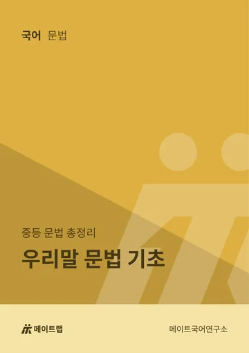
국어·영어 자체 교재와 학습 웹, 세 가지로 수업과 복습을 돕습니다.
문법·독서·문학의 뼈대를 세우는 메인 교재와, 매일 다지는 독서·문학·어휘 강화 교재입니다.
국어 교재 보기 →단어부터 어법, 문장 구문, 글 전체의 독해, 유형별 접근까지 단계별로 이어지는 교재입니다.
영어 교재 보기 →휴대폰으로 어휘를 외우고, 직접 시험을 본 뒤 결과를 담당 선생님께 보내 확인받는 학습 사이트입니다.
학습 웹 안내 보기 →문법·독서·문학, 국어의 뼈대를 세우는 메인 교재와 작품·개념·어휘까지 빈틈없이 채우는 강화 교재입니다.
중등 문법 정리부터 학교 문법 이론까지
중학교 문법을 한 권으로 정리하는 기초편과, 고등 학교 문법 전 범위를 다루는 이론편으로 구성됩니다. 규칙을 외우는 대신 원리로 이해해 처음 보는 예문에도 적용할 수 있게 합니다.
2권
기출로 시작 → 대비 → 완성하는 수능 독서
기출 지문으로 글의 구조를 잡는 순서와 선지 판단의 근거를 훈련합니다. ①에서 독해 원리를 처음 세우고, ②에서 실전 대비로 넓히고, ③에서 최신 기출로 완성합니다.
3권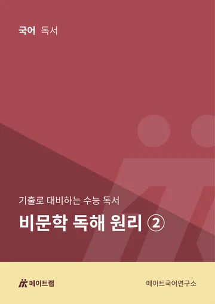
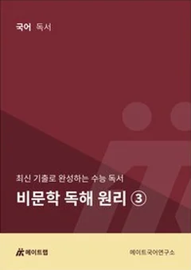
기출로 시작 → 대비 → 완성하는 수능 문학
갈래별 감상 원리와 반복 출제되는 개념어를 기출 작품에 적용합니다. 작품을 외우는 것이 아니라, 처음 보는 작품도 근거를 갖고 읽을 수 있게 단계별로 훈련합니다.
3권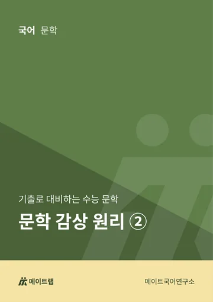
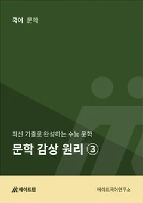
매일 다지는 독해력
독서 강화 세션 교재로, 독해 원리를 매일 실제 지문에 적용하는 연습서입니다. 꾸준한 독해량으로 읽는 속도와 정확도를 함께 끌어올립니다.
7권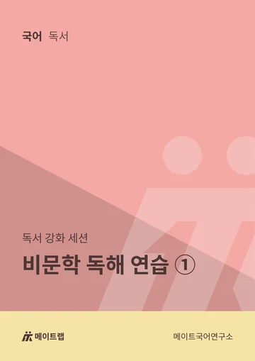
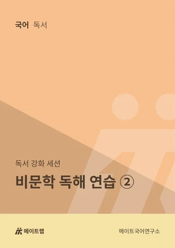
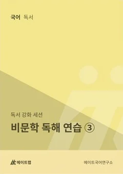
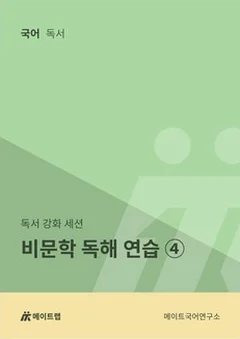
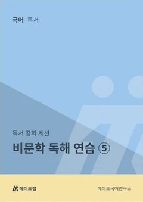
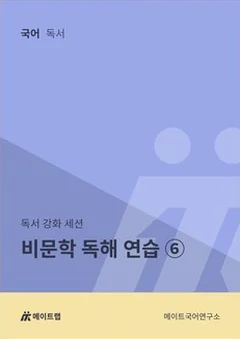
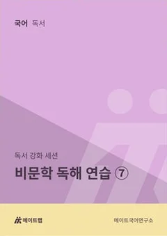
개념과 필수 작품까지 빈틈없이
내신과 수능에 필요한 문학 기초 개념을 다지는 교재와, 꼭 나오는 고전시가 작품을 정리하는 교재입니다.
2권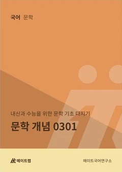
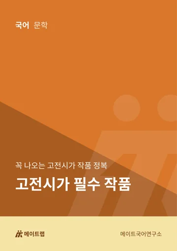
고전 어휘와 국어 필수 어휘
4주 동안 630개 고전 어휘를 익히는 교재와, 내신과 수능에 필요한 국어 어휘 교재입니다. 매주 누적 테스트와 메이트랩 학습 웹으로 외운 어휘를 점검합니다.
2권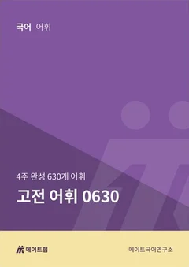
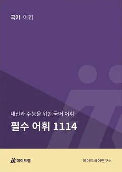
단어부터 어법, 문장에서 글의 구조까지 — 단계별로 읽는 영어를 만드는 교재입니다.
입문 → 기본 → 완성, 수준에 맞춰 고르는 어휘
수능 영어 어휘를 세 단계로 나눈 교재입니다. 학생 수준에 맞는 단계로 시작하고, 매주 영단어 테스트와 메이트랩 학습 웹으로 외운 단어를 점검합니다.
3권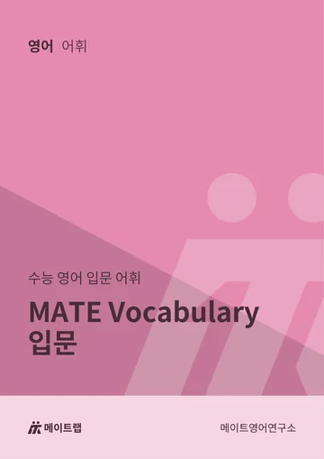
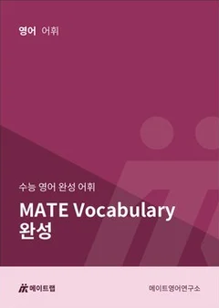
내신 전 범위와 수능 핵심
for All은 내신에 필요한 어법을 전 범위로 정리하고, for One은 수능에 나오는 어법 핵심만 모았습니다. 내신 기간과 수능 대비 기간에 맞춰 골라 씁니다.
2권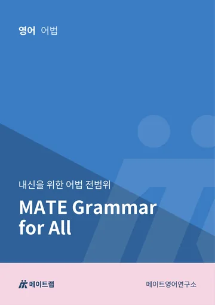
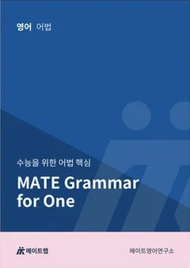
문장을 정확히 읽는 구문
문장의 뼈대(주어·동사·목적어·보어)를 먼저 잡고, 길어지는 문장도 구조로 정확하게 읽도록 훈련합니다. 문장 단위의 정확한 해석이 독해의 출발점입니다.
3권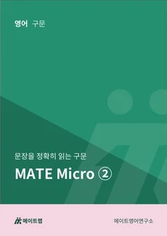
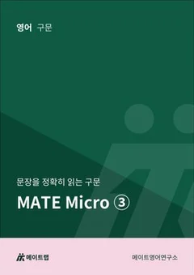
글의 구조로 읽는 독해
문단과 글 전체의 논리 흐름을 따라 읽으며 정답의 근거를 먼저 찾는 독해를 훈련합니다. Micro에서 익힌 문장 읽기를 글 전체로 넓힙니다.
3권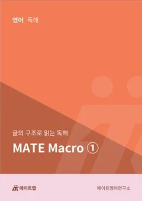
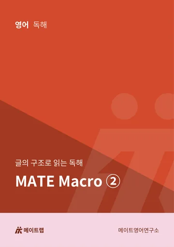
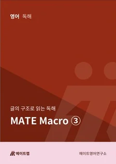
감이 아니라 구조로 읽는 방법
수능 유형마다 정답에 이르는 접근 순서를 공식처럼 정리했습니다. 문제를 보면 손이 먼저 움직이도록 유형별 풀이 행동을 반복해 익힙니다.
1권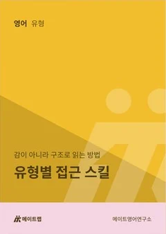
메이트랩 학습 웹은 메이트학원 학생을 위한 어휘 학습 사이트입니다. 휴대폰이나 학원 노트북에서 바로 열 수 있습니다.
학습 화면 예시
메이트랩 학습 웹으로 이동합니다학원 노트북을 같이 쓸 때는 다 쓰고 왼쪽 위 로고를 눌러 처음 화면으로 돌아가 주세요.
학습 웹 열기 ↗